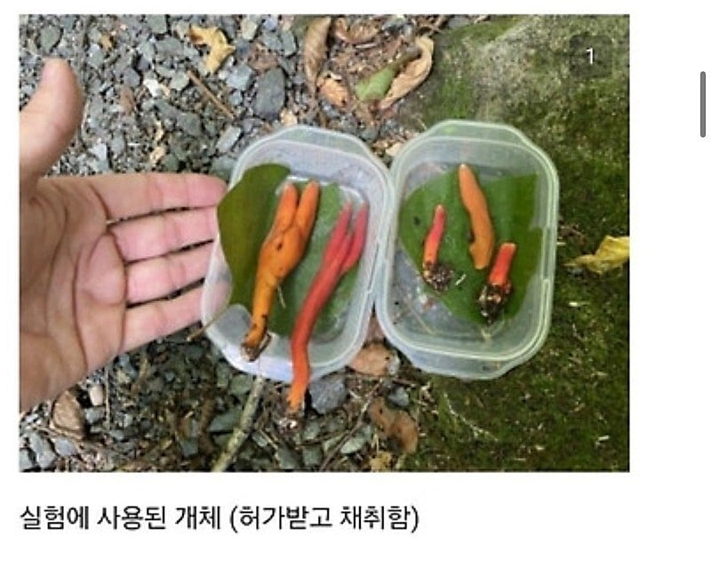
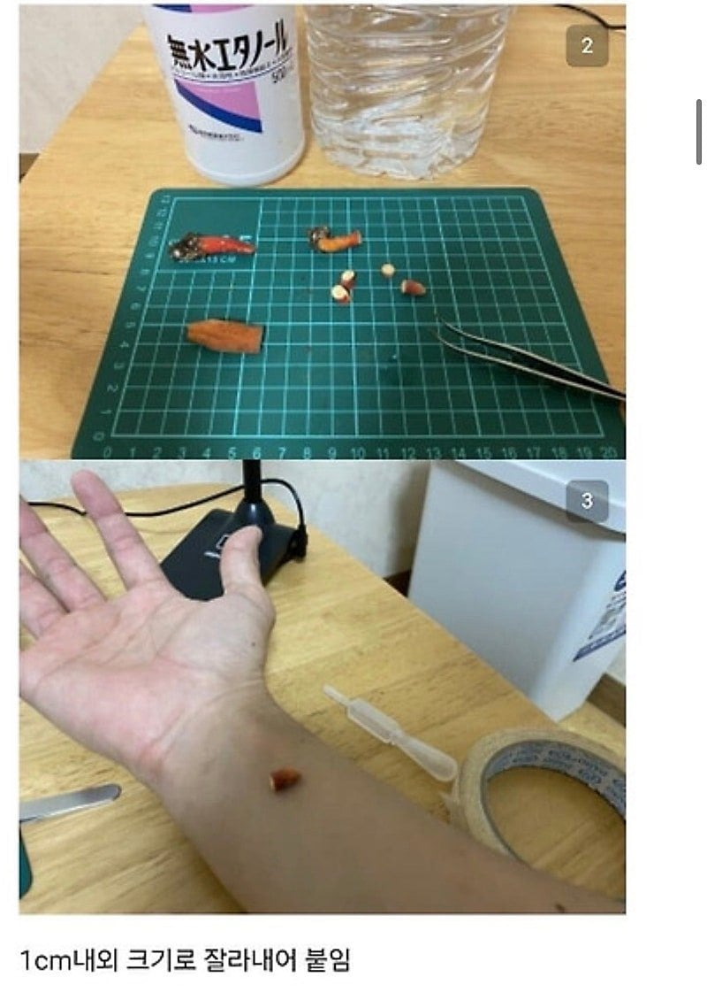
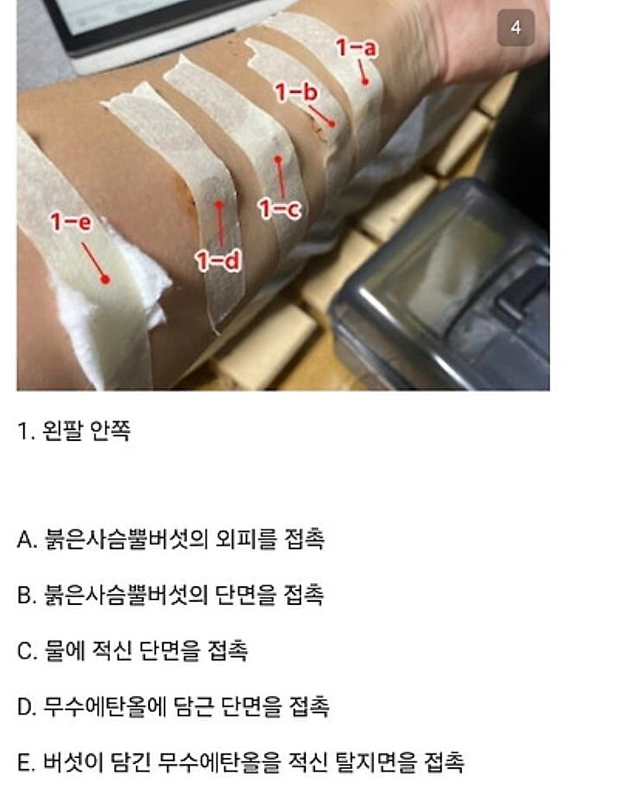
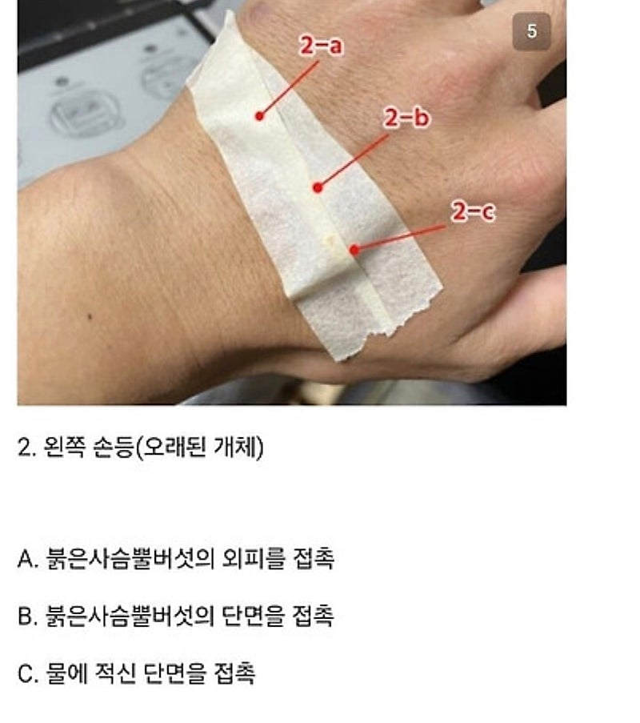
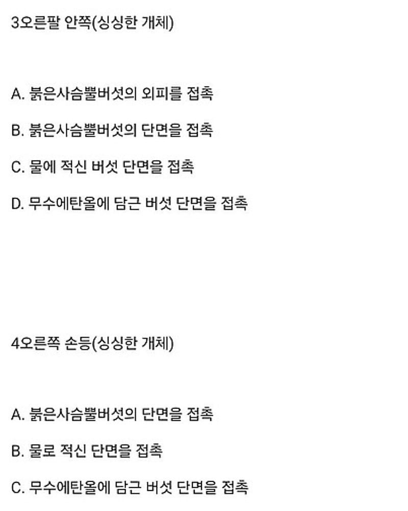
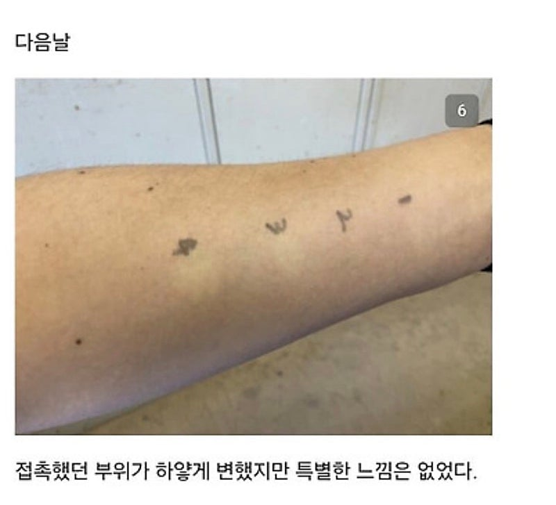
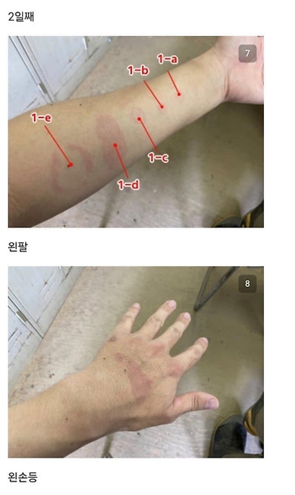
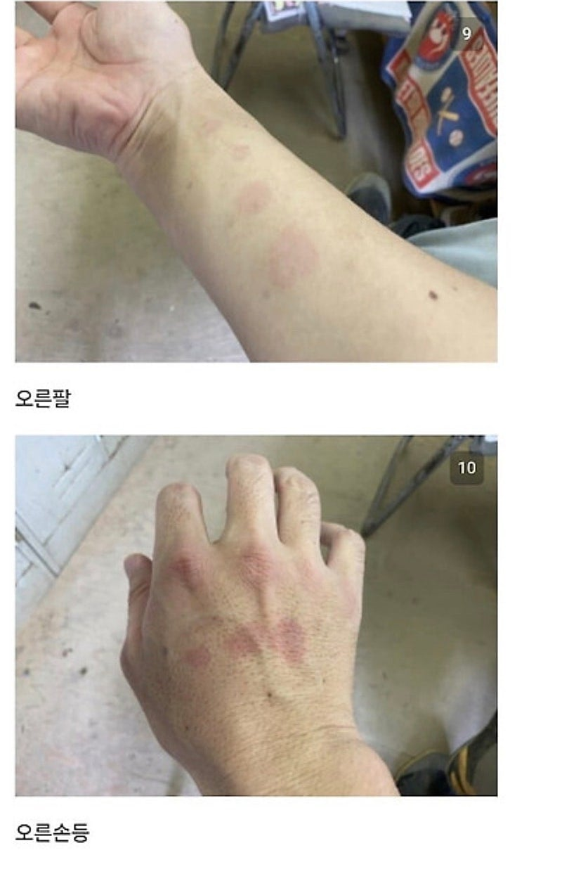
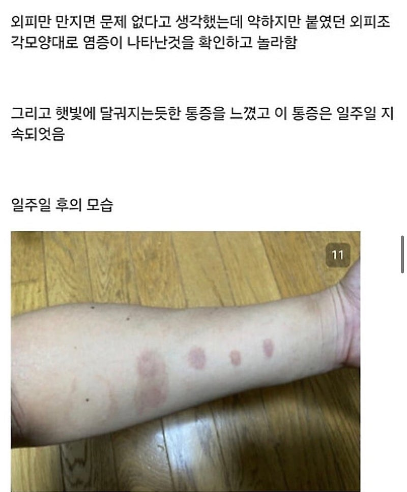
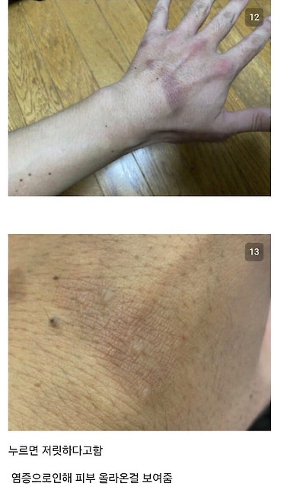
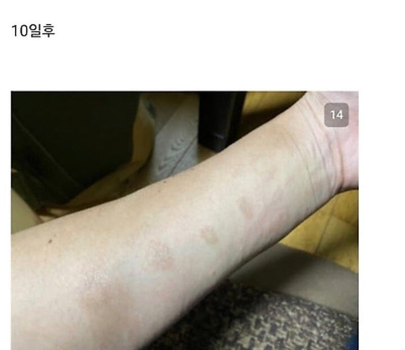
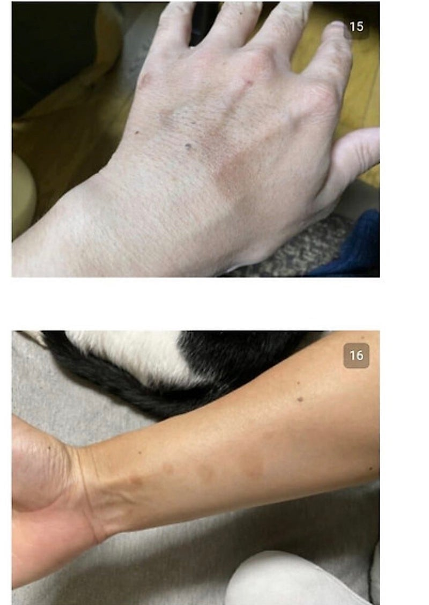
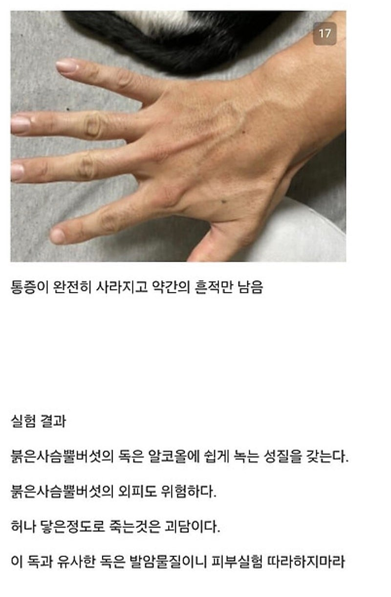













술이랑 먹으면 그냥 안주라는 뜻이지? ㅎ
미친.. ㅋㅋㅋ 붉은사슴뿔을 동충하초로 착각하고 담금주 마시고 어지러움 -> 친구 알레르기내과 교수 방문 -> 외래에서 응급실도 안 거치고 바로 중환자실로 입원장(ICU 관리자는 이래도 되냐 웅성웅성) -> 2일만에 사망 한 이야기 지인에게 들었음.
좆나 무섭다 사천당문 독이네
ICU 관리자는 이래도 되냐 웅성웅성 이 부분이 개빡치네 ㅋㅋㅋㅋㅌㅌㅋ
Icu 관리자가 뭐임? 그냥 지인 통해서 바로 오는게 맞냐고 궁시렁 댄거?
중환자실 관리자
저 이야기가 사실일지는 모르겠지만 응급실도 안거치고 교수 권한으로 중환자실로 바로 입원했다는건 절차 다 무시한 월권이지
중환자실 간호사 입장에서는 "환자 파악도 하기 전에 닥치고 걍 받으셈" 이니까 개빡칠듯
알코올에 안녹나보네
버섯에 있던 독이 녹아서 술로 옮겨갔거나 담금주 정도 도수로는 안녹거나
실험정신 미쳤네 ㅋㅋ
용자 !!
복어를 음식으로 먹어도 될때까지.....
개와 고양이가 죽었다
마루타의 민족답게 생체실험이 자연스럽네
학자다
ㅎㄷㄷㄷ
약사의 혼잣말 여주 현실편이네
진정한 약학 생체공학도의 자세다
마 니 똘개이가;;
생체실험의 민족 ㄷㄷ